정밀측정산업기사 (2017-03-05 기출문제)
1과목: 정밀계측
1. 측정에서 정확도와 정밀도에 대한 설명으로 가장 거리가 먼 것은?
- 정확도의 양적인 표시법은 모표준편차이다.
- 정밀도는 측정값의 ‘흩어짐’이 작은 정도이다.
- 정확도는 참값에 대해 ‘한 쪽으로 치우침’이 작은 정도이다.
- 정확도의 원인은 계통적 오차이고, 정밀도의 원인은 우연 오차이다.
(정답률: 79%)

2. 마이크로미터 스핀들의 피치가 1.0mm이고 딤블의 원주를 50등분하였다면 최소 측정값은?
- 0.02mm
- 0.⑤mm
- 0.002mm
- 0.0⑤mm
(정답률: 92%)
3. 버니어 캘리퍼스에서 0.02mm를 측정하려면 어미자의 눈금이 1mm일 때 아들자는 몇 mm를 측정하려면 어미자의 눈금이 1mm일 때 아들자는 몇 mm를 몇 등분해야 하는가?
- 19mm를 20등분한다.
- 39mm를 40등분한다.
- 49mm를 50등분한다.
- 59mm를 60등분한다.
(정답률: 84%)
4. 3침법에 의한 미터 나사의 유효지름 측정에서 외측측정값을 M, 3침의 지름을 d, 나사의 피치를 P라 할 때 유효지름(De)은 얼마인가?
- De=M-3×d+0.866025×P
- De=M+3×d-0.866025×P
- De=M+3.16567×d-0.866025×P
- De=M-3.16567×d+0.866025×P
(정답률: 73%)
5. 석정반의 장점이 아닌 것은?
- 수명이 길다
- 전기의 전도체이다.
- 돌기가 생기지 않는다.
- 경년 변화가 거의 없다.
(정답률: 92%)
6. 유체를 이용한 측정기는?
- 볼트미터
- 미니미터
- 간섭 현미경
- 기포관식 수준기
(정답률: 84%)
7. 축용 한계게이지에 속하는 것은?
- 봉 게이지
- 스냅 게이지
- 판 플러그 게이지
- 원통형 플러그 게이지
(정답률: 76%)
8. 가공도면치수가 50mm인 부품을 측정한 결과 49.99mm일 때 오차 백분율(%)은?
- 0.01
- 0.02
- 0.001
- 0.002
(정답률: 70%)
9. 광선정반을 이용하여 게이지블록의 평면도를 측정할 때, 간섭무늬의 굽음량과 간섭무늬의 중심간격(피치)의 비가 1:4이고 사용한 빛의 파장이 0.58μm이라면 평면도는 몇 μm인가?
- 0.0725
- 0.145
- 0.58
- 1.16
(정답률: 61%)
10. 마이크로미터 스핀들의 이송오차 검사에 사용되는 것은?
- 옵티컬 플랫
- 옵티컬 패러렐
- 게이지 블록
- 버니어 캘리퍼스
(정답률: 74%)
11. 한계 게이지 사용목적에 따른 분류 중 신교제작된 게이지를 공작용으로 사용하고, 어느 한계까지 마모된 다음에 사용하는 게이지는?
- 기준 게이지
- 점검 게이지
- 검사용 게이지
- 생산용 게이지
(정답률: 60%)
12. 공작물의 실제치수를 직접 측정할 수 없는 것은?
- 지침 측미기
- 마이크로미터
- 하이트 게이지
- 버니어캘리퍼스
(정답률: 76%)
13. 배압식 공기 마이크로미터에서 노즐과 농작물의 틈새 변화에 따른 배압의 변화는?
- 틈새가 커지면 배압이 커진다.
- 틈새가 커지면 배압이 작아진다.
- 틈새가 커지면 배압 배압은 변동이 없다.
- 틈새가 커지면 배압은 감소하다가 증가한다.
(정답률: 79%)
14. 표면거칠기의 측정방식이 아닌 것은?
- 촉침식
- 광절단식
- 광파간섭식
- 전기충전식
(정답률: 75%)
15. 롤러의 중심거리 100mm의 사인바를 사용하여 10°의 각도를 만들려면 정반 위에 양쪽 게이지 블록의 높이차는?
- 9.848mm
- 17.365mm
- 34.729mm
- 49.240mm
(정답률: 70%)
16. 수나사의 유효지름 측정법이 아닌 것은?
- 삼침법에 의한 측정
- 공구현미경에 의한 측정
- 나사 마이크로미터에 의한 측정
- 블레이드 마이크로미터에 의한 측정
(정답률: 77%)
17. 3차원 측정기 공간 정밀도를 측정하고자 할 때 가장 적합한 측정기는?
- 전기수준기
- 스텝 게이지
- 레이저 간섭계
- 오토콜리메이터
(정답률: 52%)
18. 다음 중 측정에서 우연오차를 최소로 하는 방법으로 가장 적절한 것은?
- 환경 오차를 줄인다.
- 이론적인 오차를 줄인다.
- 기기 오차가 작은 것을 사용한다.
- 반복 측정하여 평균값을 사용한다.
(정답률: 86%)
19. 공구 현미경에서 원통의 지름을 측정할 때 조리개의 지름을 나타내는 식은? (단, d:피측정물의 지름, F:콜리메이터 렌즈의 초점 거리이다.)
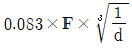
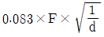
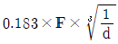
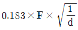
(정답률: 68%)
20. V블록을 함께 사용하여 진원도를 측정할 수 있는 것은?
- 광선 정반
- 다이얼 게이지
- 오토콜리메이터
- 버니어 캘리퍼스
(정답률: 68%)
2과목: 재료시험법
21. 반복응력 S, 반복횟수 N의 S-N곡선과 가장 관련된 시험법은?
- 인장 시험
- 경도 시험
- 피로 시험
- 압축 시험
(정답률: 77%)
22. 샤르피 충격시험에서 해머의 질량에 의한 부하는 300N, 해머 중심에서 회전축 중심까지의 거리는 0.8m일 때 충격 에너지는 약 몇 J인가? (단, 초기 들어 올림 각도는 50°이고, 시험편 파단 후 해머의 들어 올림 각도는 32°이다.)
- 34
- 39
- 44
- 49
(정답률: 47%)
23. 일반적인 인장시험에서 시험온도가 높아질수록 시험결과에 어떻게 영향을 미치는가? (단, 석출, 재결정, 변형시효 등 미시적 구조가 변화하는 경우는 제외한다.)
- 인장강도는 증가하고 연성도 증가한다.
- 인장강도는 증가하고 연성은 감소한다.
- 인장강도는 감소하고 연성은 증가한다.
- 인장강도는 감소하고 연성도 감소한다.
(정답률: 71%)
24. 긋기 경도 시험의 종류로 옳은 것은?
- 모스 경도시험
- 쇼어 경도시험
- 누프 경도시험
- 에코팁 경도시험
(정답률: 67%)
25. 다음 중 재료의 인성 측정에 가장 적합한 시험기는?
- 충격 시험기
- 경도 시험기
- 마모 시험기
- 크리프 시험기
(정답률: 67%)
26. 비커스 경도 계산식으로 옳은 것은? (단, P는 작용하중(N), d는 압입자국 대각선의 평균길이(mm)이다.)
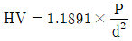
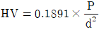
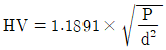
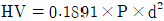
(정답률: 38%)
27. 초음파 탐상에 사용되는 경사각 탐상법의 목적으로 가장 적절한 것은?
- 판재의 응력계수 측정
- 판재의 탄성계수 측정
- 판재 표면의 결함 확인
- 용접부 내부의 결함 확인
(정답률: 65%)
28. 로크웰 경도시험기 C스케일의 압입자는?
- 지름 1/16인치 강철볼
- 꼭지각 60° 다이아몬드 원뿔형
- 꼭지각 120° 다이아몬드 원뿔형
- 꼭지각 136° 다이아몬드 원뿔형
(정답률: 69%)
29. Stress-Strain 곡선에서 상부 항복점은?
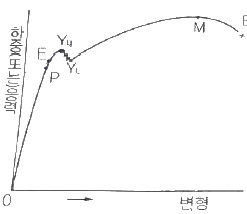
- E 점
- P 점
- YU점
- M 점
(정답률: 80%)
30. 방사선투과검사의 약자는?
- PT
- UT
- MT
- RT
(정답률: 75%)
31. 자분탐상시험으로 검사할 수 있는 것은?(오류 신고가 접수된 문제입니다. 반드시 정답과 해설을 확인하시기 바랍니다.)
- 코발트
- 티타늄
- 알루미늄
- 오스테나이트 스테인리스
(정답률: 47%)
32. 굽힘 시험 방식이 아닌 것은?
- 1점 굽힘
- 2점 굽힘
- 3점 굽힘
- 4점 굽힘
(정답률: 68%)
33. 철강 재료의 크리프(creep)곡선에서 재료의 가공 경화와 회복 연화가 서로 균형을 이루어 일정한 속도가 유지되는 단계는?
- 감속 크리프 단계
- 정상 크리프 단계
- 자연 크리프 단계
- 가속 크리프 단계
(정답률: 83%)
34. 압축시험의 응력-변형률 선도에서 m＜1일 때 적용되는 것은? (단, m은 가공경화지수이다.)
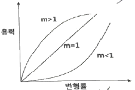
- 주철
- 콘크리트
- 가죽 제품
- 완전 탄성체
(정답률: 61%)
35. 마모시험에서 마찰계수를 구하는 식은? (단, F:마찰력, P:적용하중, μ:마찰계수이다.)
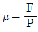
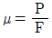
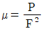
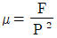
(정답률: 47%)
36. 마모시험에서 마모접촉방식에 따른 적용 방법으로 틀린 것은?
- 기어에는 회전 마모가 적용된다.
- 레일에는 회전 마모가 적용된다.
- 브레이크에는 미끄럼 마모가 적용된다.
- 피스톤과 실린더에는 회전 마모가 적용된다.
(정답률: 75%)
37. 브리넬 경도 시험기에서 하중 7355N, 강구의 지름 5mm, 압입 자국 직경 2.03mm일 때 브리넬 경도값은 약 얼마인가?
- HBW 212
- HBW 222
- HBW 229
- HBW 239
(정답률: 42%)
38. 리벳, 핀 등 체결부의 면에 평행하게 작용하는 힘과 관련된 시험법으로 가장 적절한 것은?
- 굽힙시험
- 인장시험
- 전단시험
- 비틀림시험
(정답률: 69%)
39. 변형이 일정한 조건 아래에서 부하되고 있는 재료의 응력이 시간의 경과에 따라 발생되는 조성 변형으로 인하여 점차 감소하는 과정은?
- 숏 피닝
- 트레이닝
- 응력이완
- 파괴응력
(정답률: 75%)
40. 4호 인장시험편의 모양에서 L 부분은 무엇인가?
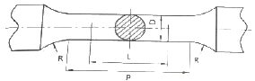
- 파단길이
- 표점거리
- 어깨부길이
- 평행부의 길이
(정답률: 76%)
3과목: 도면해독
41. 도면에서 가상선으로 사용되는 선은?
- 가는 실선
- 가는 파선
- 가는 2점 쇄선
- 가는 1점 쇄선
(정답률: 59%)
42. 아래의 기하공차기호에서 ⓟ는 무엇을 나타내는가?
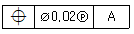
- 부분 공차역
- 돌출 공차역
- 최대 공차역
- 전체 공차역
(정답률: 73%)
43. 판금 작업 시 주로 이용되는 도면으로 대상물을 구성하는 면을 평면으로 펴서 나타낸 도면은?
- 스케치도
- 투상도
- 확산도
- 전개도
(정답률: 75%)
44. 그림에서 홈 부위에 실체 치수가 37.9로 측정되었을 경우 이 부분에 허용되는 직각도 공차는?
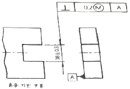
- 0.2
- 0.3
- 0.4
- 0.5
(정답률: 59%)
45. 다음 도면의 설명으로 틀린 것은?
 는 경사도의 기준값이다.
는 경사도의 기준값이다.- 경사도는 각도 중심점을 기준으로 기준값 각도의 ±0.01° 이내의 평면 사이에 지정면이 위치하여야 한다.
- 경사도는 데이텀을 필요로 한다.
 는 별도 공차는 붙일 수 없다.
는 별도 공차는 붙일 수 없다.
(정답률: 60%)
46. 그림의 (가)에 들어갈 기하공차로 맞는 것은?
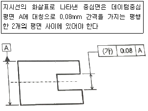
- ▱
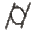
- ⊥
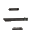
(정답률: 74%)
47. 다음 기하공차 기호 중 데이텀 기호를 적용할 수 없는 것은?
- ▱
- ⌖
- ⊥
- //
(정답률: 68%)
48. 도면상에 구멍의 위치공차가 그림과 같이 표시되었다면 어떻게 해석해야 하는가?
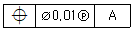
- 구멍의 중심선의 위치공차는 고멍의 치수가 어떠하든 항상 ø0.1 이내의 있어야 한다.
- 구멍의 중심선의 위치공차는 구멍의 치수가 MMS일 때 ø0.1 이내에 있어야 한다.
- 구멍의 중심선의 위치공차는 구멍의 치수가 LMS일 때 ø0.1 이내에 있어야 한다.
- 구멍의 중심선의 위치공차는 구멍의 치수가 ø0.2를 초과해서는 안된다.
(정답률: 67%)
49. 다음 도면에서 원통 전체길이 400mm에 허용되는 진직도 공차는?
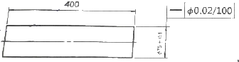
- 0.02
- 0.10
- 0.16
- 0.32
(정답률: 43%)
50. 그림과 같은 도면에서 (1)에 적용하는데 가장 적합한 기하공차는?
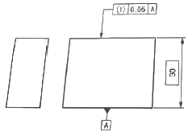
- 경사도
- 흔들림
- 면의 윤곽도
- 평면도
(정답률: 72%)
51. 자세공차에 속하는 것은?
- 평면도
- 진원도
- 진직도
- 평행도
(정답률: 69%)
52. 축의 최대 실체 실효 치수(maximum material virtual size)에 대하여 옳게 나타낸 것은?
- 축의 MMS+기하공차
- 축의 LMS+기하공차
- 축의 MMS-기하공차
- 축의 LMS-기하공차
(정답률: 72%)
53. ø45H7/g6와 같은 끼워맞춤일 때 최대틈새 값으로 옳은 것은? (단,
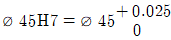
이고,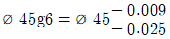
이다.)- 0.⑤0
- 0.009
- 0.025
- 0.001
(정답률: 71%)
54. 그림과 같은 부등변 부등두께 ㄱ 형강의 표시방법으로 옳은 것은? (단, 형강의 길이는 K이다.)
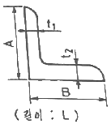
- L-K B×A×t2×t1
- L A×B×t1×t2-K
- L B×A×t1×t2-K
- L-K A×B×t2t1
(정답률: 65%)
55. 도면에서 치수기입에 관련된 설명으로 옳지 않은 것은?
- 대상물의 기능, 제작, 조립 등을 고려하여 필요하다고 생각되는 치수를 명료하게 도면에 지시한다.
- 치수는 되도록 주 투상도에 집중하여 나타낸다.
- 관련성이 있는 치수는 되도록 여러 투상도에 분리하여 나타내어 혼란이 없도록 한다.
- 치수는 중복하여 기입하지 않는다.
(정답률: 73%)
56. 대칭도를 나타내는 기하학적 형상기호는?
- ⌖
- //
- ↗
(정답률: 78%)
57. 축의 치수가
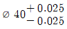
일 때 치수공차로 맞는 것은?- 0.025
- 0.020
- 0.⑤0
- 0.0⑤
(정답률: 77%)
58. 다음 조립도면의 표준 부품 중에서 ④의 평와셔 호칭을 결정할 때 기준이 되는 것은?
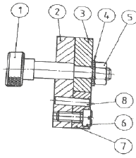
- 조립된 나사의 호칭지름
- 평와셔의 안지름
- 평와셔의 바깥지름
- 조립된 나사의 유효지름
(정답률: 57%)
59. ø16±0.01의 구멍에 치수공차가 0.4mm인 축을 끼워서 최소틈새를 0.02mm로 하려면 축의 최소 지름을 얼마로 하여야 하는가?
- ø15.47
- ø15.57
- ø15.45
- ø15.55
(정답률: 73%)
60. 다음 중 틈새가 가장 적은 헐거운 끼워맞춤은?
- ø20 H7/g6
- ø20 H7/f6
- ø20 H7/p6
- ø20 H7/t6
(정답률: 49%)
4과목: 정밀가공학
61. 래핑유가 갖추어야 할 구비조건으로 틀린 것은?
- 열의 발산이 쉬울 것
- 랩제와 혼합이 잘 된것
- 표면 장력이 클 것
- 장기간 보관 시 물성 변화가 없을 것
(정답률: 71%)
62. 원통면의 슈퍼피니싱 유닛은 주로 어느 공작기계에 부착해서 사용하는가?
- 선반
- 셰이퍼
- 호빙 머신
- 드릴링 머신
(정답률: 49%)
63. 드릴의 홈을 따라 나타나 있는 좁은 면으로 드릴의 크기를 정하며 드릴의 위치를 잡아 주는 부분의 명칭은?
- 웨브(ewb)
- 절삭 날(lips)
- 마진(margin)
- 홈 나선각(helix angle)
(정답률: 55%)
64. 지름이 50mm인 연강 둥근봉을 20m/min의 절삭속도로 선반에서 가공할 때, 주축의 회전수는 약 몇 rpm인가?
- 127
- 327
- 552
- 658
(정답률: 61%)
65. 밀링커터의 지름을 150mm, 날 수 10, 절삭속도 150m/min, 1날당 이송을 0.1mm로 하면 테이블의 이송속도는 약 몇 mm/min인가?
- 120
- 220
- 318
- 636
(정답률: 56%)
66. 밀링머신에서 상향절삭과 비교한 하향절삭에 대한 설명으로 틀린 것은?
- 동력소비가 적고 깊은 절삭에 사용한다.
- 카터의 절삭날을 마멸이 심하여 공구수명이 짧다.
- 절삭방향과 공작물의 이송방향이 동일하다.
- 특수한 테이블 이송나사의 백래시 제거장치가 필요하다.
(정답률: 64%)
67. 절삭저항의 3분력에 속하지 않는 것은?
- 주분력
- 배분력
- 절삭분력
- 이송분력
(정답률: 75%)
68. 브라운 샤프형의 21구멍 분할관을 사용, 단식 분할하여 원주를 7등분하는 방법으로 옳은 것은?
- 분할 크랭크를 5회전하고 3구멍씩 전진하면서 가공한다.
- 분할 크랭크를 3회전하고 7구멍씩 진진하면서 가공한다.
- 분할 크랭크를 3회전하고 5구멍씩 전진하면서 가공한다.
- 분할 크랭크를 5회전하고 15구멍씩 전진하면서 가공한다.
(정답률: 57%)
69. 절삭속도 120m/min, 절삭깊이 6mm, 이송 0.2mm/rev로 ø80mm의 환봉을 선삭하려 한다. 환봉의 길이가 800mm 이라고 하면 이를 1회 선삭할 때, 필요한 가공시간은?
- 약 4.2분
- 약 8.4분
- 약 12.6분
- 약 16.8분
(정답률: 49%)
70. 정도 높은 차축의 선반 가공방법으로 가장 적합한 것은?
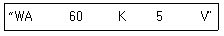
- 독립 척 작업
- 양 센터 작업
- 스크롤(scroll)척 작업
- 면판과 고정구에 의한 작업
(정답률: 52%)
71. 방전 가공의 특징에서 틀린 것은?
- 전극이 필요하다.
- 무인가공이 가능하다.
- 가공 부분에 변질 층이 없다.
- 가공물 경도와 관계없이 가공이 가능하다.
(정답률: 48%)
72. 수평밀링에서 2개 이상의 커터를 조합할 때, 커터 간의 간격 조정요소로 사용되는 부속품은?
- 아버
- 콜릿
- 드라이버
- 스페이스 칼라
(정답률: 52%)
73. 절삭가공 시 절삭유의 사용 목적으로 틀린 것은?
- 공구와 칩의 마찰계수의 증대
- 공구와 공작물의 냉각
- 공작물의 표면 세척작용
- 절삭열에 의한 정밀도 저하를 방지
(정답률: 78%)
74. 버핑빙과는 달리 미세한 연삭입자로 된 바퀴를 이용하여 가공 표면을 매끈하게 가공하는 방법은?
- 방전가공
- 초음파가공
- 전해가공
- 폴리싱
(정답률: 67%)
75. 보통 호빙머신으로 가공할 수 있는 기어로 거리가 먼 것은?
- 베벨 기어
- 스퍼 기어
- 헬리컬 기어
- 윔 기어
(정답률: 42%)
76. 선반에서 테이퍼를 깎는 방법이 아닌 것은?
- 복식 공구대를 경사시킨다.
- 테이퍼 절삭장치를 이용한다.
- 백기어를 사용한다.
- 심압대를 편위시킨다.
(정답률: 65%)
77. 구성인선을 이용한 절삭가공방법을 무엇이라고 하는가?
- 2차원 절삭법
- 3창원 절삭법
- 저온 절삭법
- 은백 절삭법
(정답률: 57%)
78. 연삭숫돌의 표시 방법에서 “5”는 무엇을 의미하는가?
- 경도
- 조직
- 입도
- 결합도
(정답률: 41%)
79. 연삭숫돌은 일정한 위치에서 회전시키고, 공작물을 회전하면서 좌우로 이송하며 연삭하는 방식은?
- 플런지 연삭
- 트래버스 연삭
- 센터리스 연삭
- 내면 연삭
(정답률: 53%)
80. 조정 숫돌차의 바깥 지름 500mm인 센터리스 연삭기를 40rpm으로 회전 시 경사각이 5°일 때 1분간 가공물의 이송속도는 약 몇 m/mim인가?
- 0.628
- 5.48
- 6.28
- 54.8
(정답률: 45%)
정확도는 참값에 대해 얼마나 가까운지를 나타내는 지표이며, 모표준편차는 모집단의 분산을 나타내는 지표이다. 따라서, "정확도의 양적인 표시법은 모표준편차이다."라는 설명은 정확도와는 직접적인 관련이 없는 것으로 보인다.